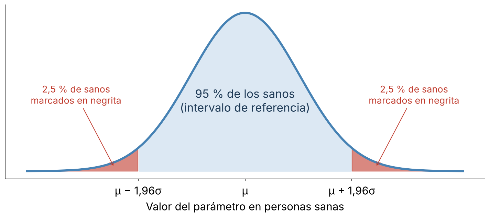
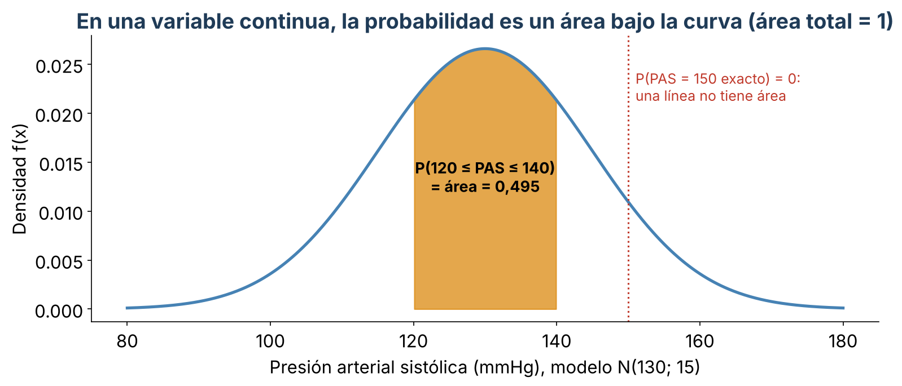
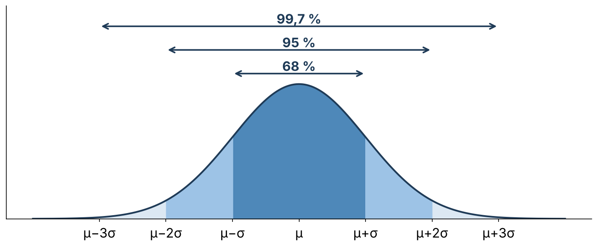
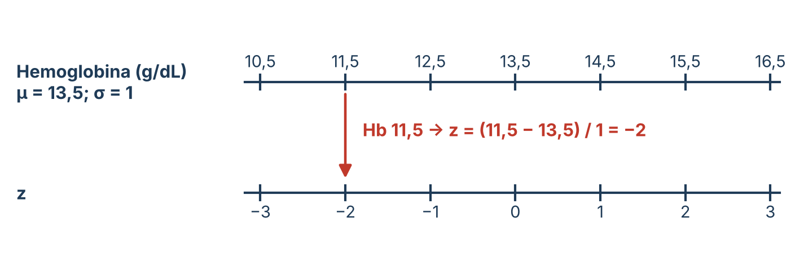
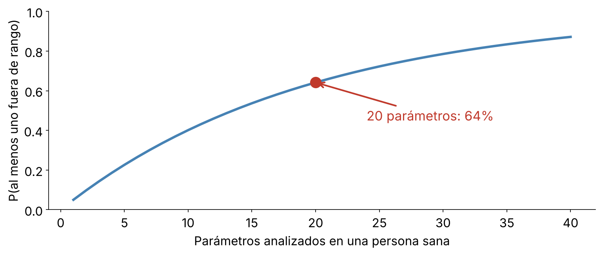
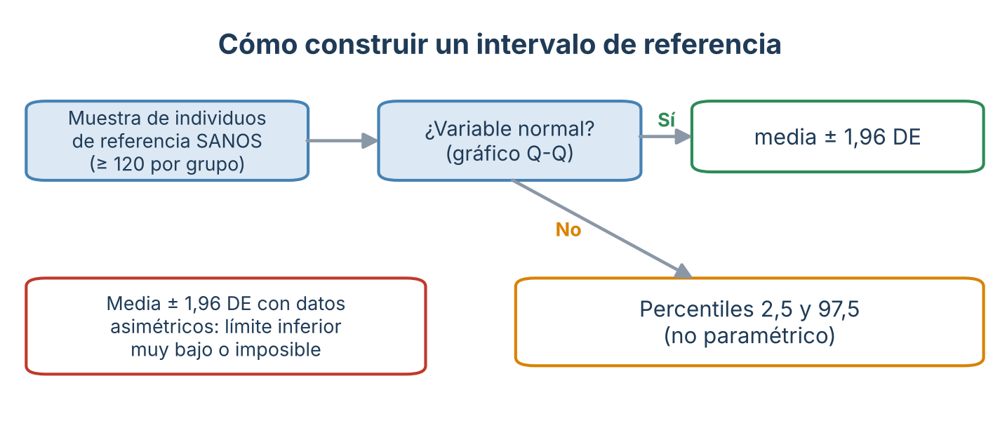

Bioestadística (1964) · Grado en Medicina · Curso 2027-2028
Tema 180Variables aleatorias continuas y distribución normal: intervalos de referencia clínicos
Módulo 4. Probabilidad
Evaluación: el examen del Módulo 4 se hace a mano, con la tabla de la normal tipificada. Resuelve primero cada ejercicio con papel y calculadora, y usa el código solo para comprobar.
Fernando Borrás Rocher · Universidad Miguel Hernández de Elche · CC BY 4.0
Objetivos de aprendizaje
Al terminar esta sesión serás capaz de:
- Explicar qué es una variable aleatoria continua y por qué su probabilidad se calcula como un área.
- Describir las propiedades de la distribución normal y la regla 68-95-99,7.
- Tipificar un valor clínico y calcular probabilidades con la tabla de la normal.
- Calcular percentiles de una distribución normal.
- Construir un intervalo de referencia del 95 %, con el método paramétrico o con percentiles, según la forma de los datos.
- Comprobar si unos datos se aproximan a la normal con un gráfico cuantil-cuantil.
Cómo usar esta presentación
Usa el selector de arriba para dar el tema en una sesión completa o en dos sesiones intercaladas.
🎓 Sesión de clase magistral
- 1. Caso clínico de partida 5 min
- 2. Conceptos clave 10 min
- 5. Autoevaluación 5 min
Explica los conceptos, haz la pausa activa y cierra con las ideas clave.
💻 Sesión de Colab
- 3. Demostración: la normal en la clínica 20 min
- 4. Práctica en la app Bioestadística 10 min
- 5. Autoevaluación 5 min
Cada estudiante abre su copia del cuaderno, predice el resultado y después ejecuta la celda.
Teclas: ← → para pasar · N notas del profesor · M cambiar de modo · F pantalla completa · Esc índice.
1. Caso clínico de partida
Javier, sano, con dos valores «fuera de rango»

- El intervalo de referencia contiene al 95 % central de los sanos: un 5 % de sanos queda fuera.
- Fuera del intervalo significa «poco frecuente en sanos», no «enfermo».
2. Conceptos clave
2.1 Variables continuas y función de densidad

Una variable continua (peso, glucemia, presión arterial) puede tomar cualquier valor en un intervalo. Su comportamiento se describe con una función de densidad f(x):
- La probabilidad de que la variable esté entre a y b es el área bajo la curva entre esos valores.
- El área total bajo la curva es 1.
- La probabilidad de un valor exacto es 0: P(peso = 70,000… kg) = 0. Solo tienen sentido las probabilidades de intervalos.
2. Conceptos clave
2.2 La distribución normal
La regla 68 – 95 – 99,7

- La normal queda definida por su media μ y su desviación típica σ.
- μ ± 1,96 σ contiene al 95 % de los valores.
2. Conceptos clave
2.3 Tipificación
Tipificar: ¿a cuántas desviaciones de la media está?

- z = (x − μ) / σ pone en la misma escala variables con unidades distintas.
- |z| > 1,96 → fuera del 95 % central.
2. Conceptos clave
2.4 Intervalos de referencia
20 parámetros: lo raro es que todo salga normal

- Con 20 parámetros independientes, P(al menos uno fuera) = 1 − 0,95²⁰ ≈ 64 %.
- Por eso un valor ligeramente alterado y aislado en un sano suele no tener importancia.
Pausa activa
Piensa 30 segundos, comenta con quien tienes al lado y vota.
La PAS de una población sigue una N(125, 15). ¿Qué proporción tiene una PAS mayor de 155 mmHg?
En la sesión de Colab
Lo que acabas de ver se comprueba con datos en el cuaderno del Tema 180.
- Abre el cuaderno y guarda tu copia: Archivo → Guardar una copia en Drive.
- Ejecuta la celda de configuración.
- Ve a la demostración y predice cada resultado antes de ejecutar.
3. Demostración: la normal en la clínica
3.1 Probabilidades de la normal a mano
▶ En tu cuaderno: 3.1 Probabilidades de la normal a mano. Antes de ejecutar, escribe qué esperas obtener.
La talla de los hombres adultos de una población sigue aproximadamente una normal con μ = 175 cm y σ = 7 cm.
¿Qué proporción mide más de 190 cm? A mano:
$$z = \frac{190 - 175}{7} = 2{,}14 \qquad P(X > 190) = P(Z > 2{,}14) = 1 - 0{,}984 = 0{,}016$$
¿Y entre 168 y 182 cm? Es μ ± σ: aproximadamente el 68 %.
from scipy import stats
import numpy as np
talla = stats.norm(loc=175, scale=7)
print(f"P(talla > 190) = {talla.sf(190):.3f}")
print(f"P(168 < talla < 182) = {talla.cdf(182) - talla.cdf(168):.3f}")
print(f"z de 190 cm: {(190 - 175) / 7:.2f}")Método de scipy.stats.norm |
Calcula |
|---|---|
.cdf(x) |
P(X ≤ x) |
.sf(x) |
P(X > x) |
.ppf(q) |
El valor que deja por debajo la proporción q (percentil) |
.pdf(x) |
La altura de la curva de densidad en x |
3. Demostración: la normal en la clínica
3.2 El área bajo la curva
▶ En tu cuaderno: 3.2 El área bajo la curva. Antes de ejecutar, escribe qué esperas obtener.
import matplotlib.pyplot as plt
x = np.linspace(145, 205, 400)
plt.figure(figsize=(8, 4))
plt.plot(x, talla.pdf(x), color="black")
for k, alfa in [(3, 0.15), (2, 0.25), (1, 0.4)]:
zona = (x >= 175 - k * 7) & (x <= 175 + k * 7)
plt.fill_between(x[zona], talla.pdf(x[zona]), alpha=alfa, color="steelblue",
label=f"μ ± {k}σ: {talla.cdf(175 + k*7) - talla.cdf(175 - k*7):.1%}")
plt.xlabel("Talla (cm)")
plt.ylabel("Densidad")
plt.title("Talla de hombres adultos: N(175, 7)")
plt.legend()
plt.show()3. Demostración: la normal en la clínica
3.3 Percentiles: de la probabilidad al valor
▶ En tu cuaderno: 3.3 Percentiles: de la probabilidad al valor. Antes de ejecutar, escribe qué esperas obtener.
¿A partir de qué talla está el 5 % más alto? A mano: el percentil 95 de Z es 1,645, así que x = 175 + 1,645 × 7 ≈ 186,5 cm.
print(f"Percentil 95: {talla.ppf(0.95):.1f} cm")
print(f"Percentiles 2,5 y 97,5: {talla.ppf(0.025):.1f} y {talla.ppf(0.975):.1f} cm")Las gráficas de crecimiento de Pediatría usan esta idea. Un niño en el percentil 3 de talla está unas 1,88 desviaciones típicas por debajo de la media de su edad y sexo.
3. Demostración: la normal en la clínica
3.4 ¿Son normales los datos? El gráfico cuantil-cuantil
▶ En tu cuaderno: 3.4 ¿Son normales los datos? El gráfico cuantil-cuantil. Antes de ejecutar, escribe qué esperas obtener.
El gráfico cuantil-cuantil (Q-Q) compara los cuantiles de los datos con los de una normal. Si los puntos siguen la recta, los datos se aproximan a la normal. Comparamos la talla de los hombres de la cohorte con la creatinina.
import pandas as pd
DATOS = "https://raw.githubusercontent.com/fborrasumh/bioestadistica/main/datos/"
datos = pd.read_csv(DATOS + "cohorte_limpia.csv").merge(pd.read_csv(DATOS + "analiticas.csv"), on="id", how="left")
talla_hombres = datos.loc[datos["sexo"] == "Hombre", "talla_cm"].dropna()
creatinina = datos["creatinina_mg_dl"].dropna()
fig, ejes = plt.subplots(1, 2, figsize=(11, 4))
stats.probplot(talla_hombres, dist="norm", plot=ejes[0])
ejes[0].set_title("Talla de los hombres: se ajusta a la recta")
stats.probplot(creatinina, dist="norm", plot=ejes[1])
ejes[1].set_title("Creatinina: se curva (asimetría a la derecha)")
plt.tight_layout()
plt.show()3. Demostración: la normal en la clínica
3.5 Intervalo de referencia de una variable normal
▶ En tu cuaderno: 3.5 Intervalo de referencia de una variable normal. Antes de ejecutar, escribe qué esperas obtener.
media, de = talla_hombres.mean(), talla_hombres.std()
print(f"Talla de los hombres: media {media:.1f} cm, DE {de:.1f} cm (n = {len(talla_hombres)})")
print(f"Intervalo de referencia paramétrico: {media - 1.96 * de:.1f} a {media + 1.96 * de:.1f} cm")
print(f"Intervalo por percentiles 2,5 y 97,5: {talla_hombres.quantile(0.025):.1f} a {talla_hombres.quantile(0.975):.1f} cm")En una variable normal, los dos métodos dan resultados muy parecidos.
3. Demostración: la normal en la clínica
3.6 Intervalo de referencia de una variable asimétrica
▶ En tu cuaderno: 3.6 Intervalo de referencia de una variable asimétrica. Antes de ejecutar, escribe qué esperas obtener.

media, de = creatinina.mean(), creatinina.std()
p025, p975 = creatinina.quantile([0.025, 0.975])
log_c = np.log(creatinina)
li_log, ls_log = np.exp(log_c.mean() - 1.96 * log_c.std()), np.exp(log_c.mean() + 1.96 * log_c.std())
print(f"Paramétrico (incorrecto aquí): {media - 1.96 * de:.2f} a {media + 1.96 * de:.2f} mg/dL")
print(f"Percentiles 2,5 y 97,5: {p025:.2f} a {p975:.2f} mg/dL")
print(f"Transformación logarítmica: {li_log:.2f} a {ls_log:.2f} mg/dL")Si se aplica el método paramétrico a una variable asimétrica, el límite inferior sale demasiado bajo, incluso imposible. Además, deja fuera de lo «normal» una proporción distinta del 5 %. Comprobamos qué porcentaje de la cohorte queda fuera de cada intervalo:
for nombre, (li, ls) in {"Paramétrico": (media - 1.96 * de, media + 1.96 * de),
"Percentiles": (p025, p975),
"Logarítmico": (li_log, ls_log)}.items():
fuera = ((creatinina < li) | (creatinina > ls)).mean()
print(f"{nombre:>12}: {fuera:.1%} fuera · por debajo {(creatinina < li).mean():.1%} · por encima {(creatinina > ls).mean():.1%}")Advertencia: la cohorte no está formada solo por personas sanas; incluye pacientes con enfermedad renal. Por eso, ninguno de estos intervalos sirve como intervalo de referencia de un laboratorio. Para construirlo hay que seleccionar una muestra de individuos de referencia sanos.
3. Demostración: la normal en la clínica
3.7 El caso de Javier: muchas pruebas, algún resultado fuera de rango
▶ En tu cuaderno: 3.7 El caso de Javier: muchas pruebas, algún resultado fuera de rango. Antes de ejecutar, escribe qué esperas obtener.
Supón 20 parámetros independientes; cada uno deja fuera al 5 % de los sanos. Por el complementario (Tema 140), la probabilidad de que una persona sana tenga al menos uno fuera de rango es:
$$1 - 0{,}95^{20} \approx 0{,}64$$
for n_pruebas in [1, 5, 10, 20, 40]:
print(f"{n_pruebas:>2} pruebas: P(al menos una fuera de rango en un sano) = {1 - 0.95 ** n_pruebas:.2f}")Casi dos de cada tres personas sanas con una analítica de 20 parámetros tendrán algún resultado «anormal». Interpreta un valor ligeramente fuera de rango en un paciente asintomático según su contexto clínico. A menudo conviene repetirlo antes de pedir más estudios. Es el mismo problema de las comparaciones múltiples que veremos en el Tema 260.
Ampliación
Ampliación: otras distribuciones continuas
| Distribución | Uso clínico |
|---|---|
| Log-normal | Variables positivas y asimétricas: creatinina, triglicéridos, concentraciones de fármacos |
| Exponencial | Tiempo hasta un suceso cuando la tasa es constante, como el tiempo entre llegadas a Urgencias |
| t de Student | Inferencia sobre medias con muestras pequeñas (Tema 250) |
| Ji cuadrado | Análisis de tablas de contingencia (Tema 230) |
espera = stats.expon(scale=12) # tiempo medio entre llegadas: 12 minutos
print(f"P(más de 30 min sin ninguna llegada) = {espera.sf(30):.3f}")Ampliación
Ampliación: errores frecuentes
Asumir que toda variable clínica es normal. Mira siempre el histograma y el gráfico Q-Q.
Calcular un intervalo de referencia con media ± 1,96 DE en una variable asimétrica.
Interpretar un valor fuera del intervalo de referencia como enfermedad. El 5 % de los sanos está fuera, por definición.
Confundir el intervalo de referencia con el intervalo de confianza (Tema 200). El de referencia dice dónde está el 95 % de los individuos sanos. El de confianza expresa la precisión de una estimación.
Equivocar el sentido de la tabla: P(Z > z) = 1 − P(Z ≤ z).
Ampliación
Ampliación: La distribución exponencial
La distribución exponencial describe el tiempo hasta un suceso cuando la tasa es constante. Es la pareja continua de la Poisson (Tema 170). Si llegan λ pacientes por unidad de tiempo, el tiempo entre llegadas es exponencial con media 1/λ.
- Probabilidad de esperar más de t: $P(T > t) = e^{-t/\mu}$, con μ = tiempo medio.
- Falta de memoria: haber esperado ya 10 minutos no cambia la probabilidad de esperar 5 más.
Ejemplo: a Urgencias llega de media un paciente cada 6 minutos (10 por hora).
En tus materiales SIMUSTAT: Tema 300. Variables aleatorias continuas, apartado 3.
T = stats.expon(scale=6) # tiempo medio = 6 minutos
print(f"P(T > 15 min) = {T.sf(15):.3f}")
print(f"P(T ≤ 2 min) = {T.cdf(2):.3f}")
print(f"Mediana = {T.median():.1f} min (menor que la media: la distribución es asimétrica)")
print(f"Falta de memoria: P(T > 15 | T > 10) = {T.sf(15) / T.sf(10):.3f} = P(T > 5) = {T.sf(5):.3f}")
t = np.linspace(0, 30, 300)
plt.plot(t, T.pdf(t), color="steelblue")
plt.fill_between(t[t > 15], T.pdf(t[t > 15]), color="orange", alpha=0.6, label="P(T > 15)")
plt.xlabel("Minutos hasta el siguiente paciente")
plt.ylabel("Densidad")
plt.legend()
plt.show()La tasa de llegadas a Urgencias no es constante a lo largo del día. Por eso el modelo exponencial vale para franjas cortas con un flujo estable, no para las 24 horas.
4. Práctica en la app Bioestadística
Abre la unidad 180 de la app Bioestadística y completa sus misiones:
- Misión básica (sin asistente): calcular a mano, con la tabla de la normal, probabilidades y percentiles de la hemoglobina en mujeres sanas.
- Misión clínica (con pistas): construir el intervalo de referencia de la TSH en una muestra sintética de sanos. Decidir qué método es el adecuado.
- Misión reto (con asistente): pedir al asistente el intervalo de referencia de los triglicéridos. Comprobar si ha tenido en cuenta la asimetría y corregirlo si no.
Al terminar, exporta el informe de la unidad.
5. Autoevaluación
Responde a mano, con la tabla de la normal, sin asistente y sin ejecutar código.
5. Autoevaluación
Elige una opción: verás la explicación.
La PAS de una población sigue una N(125, 15). ¿Qué proporción tiene una PAS mayor de 155 mmHg?
En una variable continua, ¿cuánto vale P(glucemia = 100,000… mg/dL exactamente)?
¿Qué intervalo de referencia es adecuado para una variable claramente asimétrica?
Una persona sana se hace 10 pruebas independientes, cada una con un intervalo de referencia del 95 %. ¿Qué probabilidad tiene de que todas salgan dentro del intervalo?
Un niño tiene una talla con z = −2 para su edad y sexo. ¿En qué percentil aproximado está?
Ideas clave
- En una variable continua, la probabilidad es el área bajo la curva de densidad.
- La normal es simétrica; el 95 % de los valores está entre μ ± 1,96σ.
- Tipificar ($z = (x - μ) / σ$) permite usar una única tabla para cualquier normal.
- Por definición, el intervalo de referencia deja fuera al 5 % de los sanos. Se calcula con media ± 1,96 DE solo si la variable es normal.
- Con muchas pruebas, casi todo el mundo tiene algún resultado «fuera de rango».
Glosario
| Término | Definición |
|---|---|
| Variable continua | Variable que puede tomar cualquier valor en un intervalo |
| Función de densidad | Curva cuya área entre dos valores es la probabilidad de ese intervalo |
| Distribución normal | Distribución continua y simétrica con forma de campana |
| Normal tipificada | Normal con media 0 y desviación típica 1 |
| Tipificar | Transformar un valor en z: número de desviaciones típicas respecto a la media |
| Percentil | Valor que deja por debajo un porcentaje dado de la distribución |
| Intervalo de referencia | Rango que contiene el 95 % central de los valores de individuos sanos |
| Gráfico cuantil-cuantil | Gráfico que compara los cuantiles de unos datos con los de una distribución teórica |
| Distribución log-normal | Distribución de una variable cuyo logaritmo sigue una normal |
Para saber más
- Altman DG, Bland JM. The normal distribution. BMJ. 1995;310(6975):298. doi:10.1136/bmj.310.6975.298
- Clinical and Laboratory Standards Institute. Defining, establishing, and verifying reference intervals in the clinical laboratory. Guía EP28-A3c. CLSI; 2010. Disponible en: clsi.org.
- Documentación de scipy.stats.norm
- SIMUSTAT Unidigital UMH. Tema 300. Variables aleatorias continuas. Cuaderno de Google Colab. Elche: Universidad Miguel Hernández; 2023.